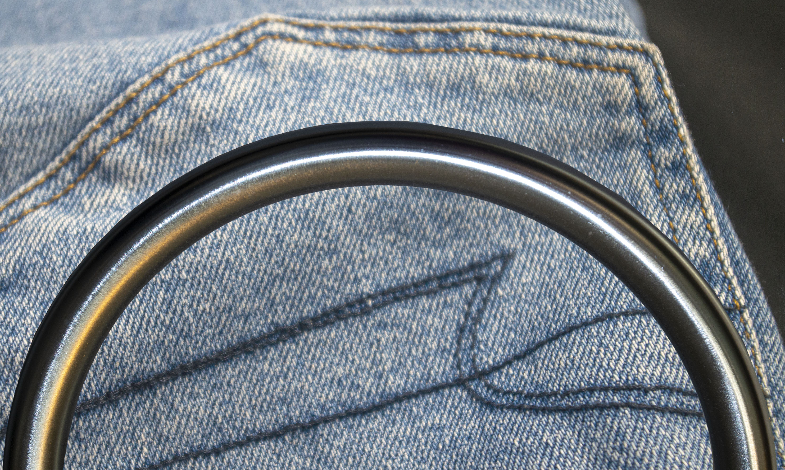

Here, near the border of Bathroom is what is known as the Gateway to the Sea. It is a great ring through which you can see the vast endless ocean. Travelers often leave small pieces of cloth on it to symbolize good luck and act as a marker of their visit.